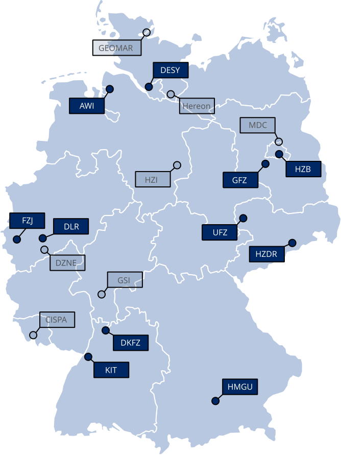
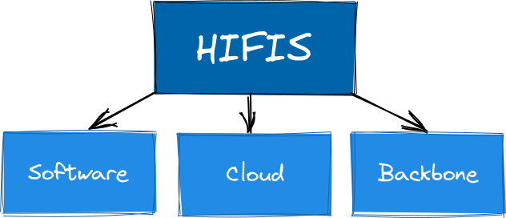
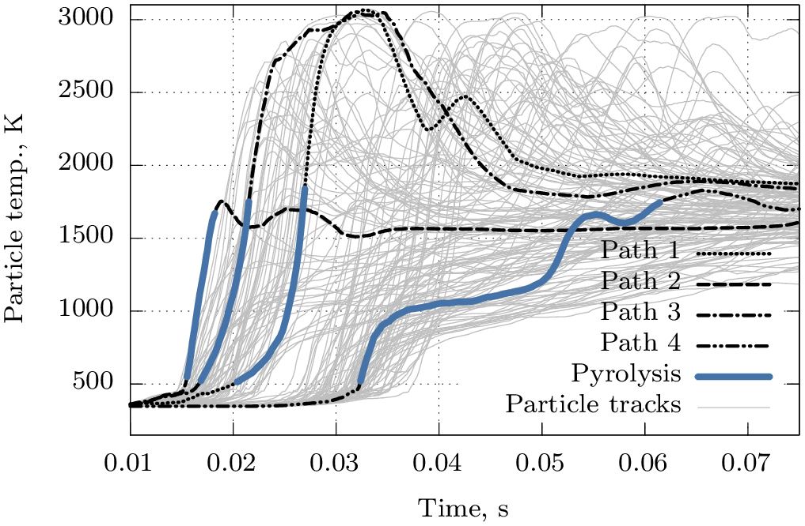

30.07.2025
at the Helmholtz Center Dresden Rossendorf (HZDR)


My Role a Consultant (Link)
My Supported Consulting Project (gitlab & github)
Other Projects
as a Researcher at the TU Freiberg
Gasification Simulations

Preprocessor for \(\mathrm{\bf C_{x}H_{y}O_{z}N_{a}S_{b}}\) (python)
Wall two-way boundary conditions (c routine for ANSYS Fluent)
0D Model for heterogeneous reactions (python)
Post flame characterisation (bash, python)
Thank you.
If you have any questions do not hesitate to ask.